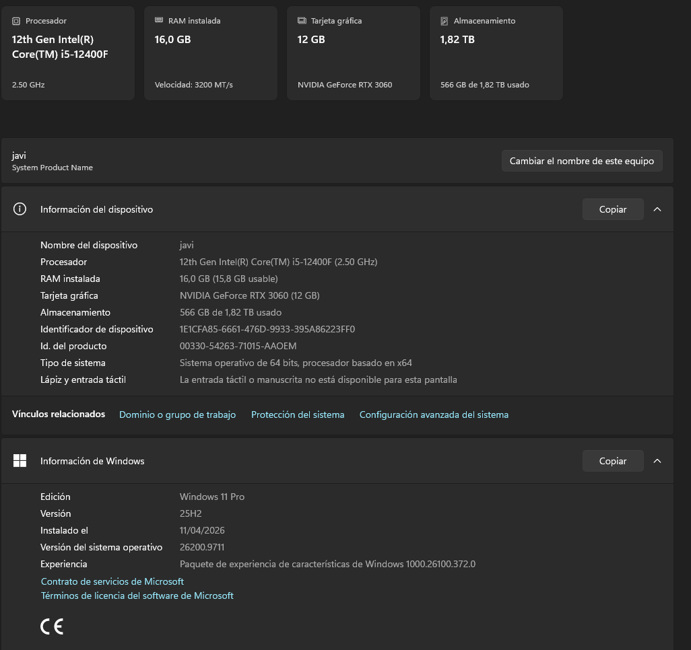

Características
- Tipo de equipo: ordenador de sobremesa
- Sistema operativo: Windows 11 Pro, versión 25H2, de 64 bits
- Uso en el aula: equipo personal para las prácticas de clase
Datos técnicos
- Procesador
- Intel Core i5-12400F de 12.ª generación a 2,50 GHz
- Memoria RAM
- 16 GB a 3200 MT/s
- Tarjeta gráfica
- NVIDIA GeForce RTX 3060 de 12 GB
- Almacenamiento
- 1,82 TB
Más información en la web del fabricante del procesador.
Puesta en marcha
- Conectar el cable de alimentación.
- Pulsar el botón de encendido.
- Iniciar sesión con el usuario del aula.